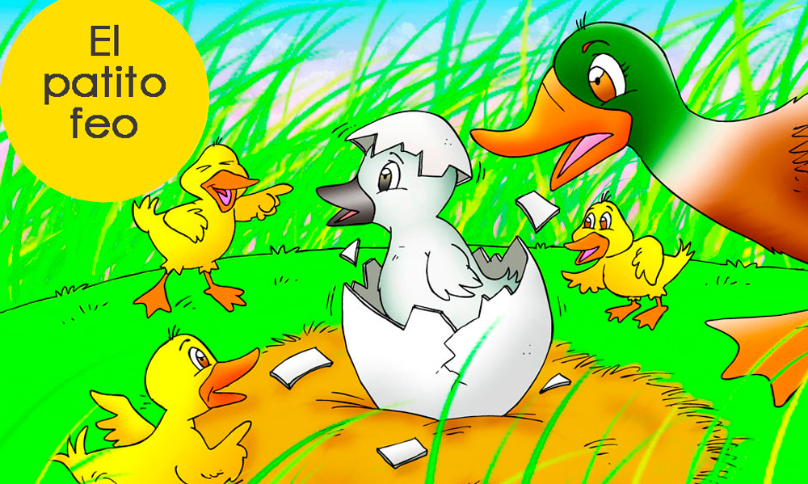

EL PATITO FEO
Una pata tiene varios patitos, pero uno de ellos es mucho más feo, tosco y torpe que el resto, por lo que todos se burlan de él. El patito decide huir de allí y......
Una pata tiene varios patitos, pero uno de ellos es mucho más feo, tosco y torpe que el resto, por lo que todos se burlan de él. El patito decide huir de allí y......
Autor: Hans Christian Andersen
Erase una vez una Mamá Pata que guardaba su nido y esperaba contenta a que nacieran sus patitos de los huevos que en él estaban. Un día los huevos empezaron a romperse uno a uno, y de cada uno de ellos salió un bonito patito amarillo, hasta que solo quedó uno por abrirse.
Era el huevo más grande de todos, y a Mamá Pata siempre le había parecido diferente a los demás, pero era otro de sus patitos y esperaba con emoción que se abriera el último de los huevos. Hasta que, mientras Mamá Pata y patitos lo observaban, ya que no le quitaban el ojo de encima, empezó a moverse para abrirse. En ese momento, todos rodearon al huevo y esperaron expectantes al patito que iba a salir.
Entonces, grieta tras grieta, el huevo se rompió y de él salió un patito diferente a los demás. Su pelaje era extraño, sin ningún rastro del bonito color amarillo que tenían los demás. Mamá Pata, boquiabierta, miraba a aquel patito, mientras él se aproximaba a su mamá y a sus hermanos con pasos muy torpes.
– ¡Debe ser un error! – decía . ¡No se parece a sus hermanos!
Y, entonces, Mamá Pata, se apartó del patito cuando este se acercó a ella, dejándole muy claro que no quería saber nada de él, dejándolo muy triste y necesitado de calor y cariño.
Sus hermanos le llamaban el Feo y se sentía tan triste, que decidió marcharse y emprender un nuevo camino. Iría a buscar una nueva familia que sí le quisiera, así que se puso en marcha. Pronto, se encontró con una señora que lo llevó a su casa. Allí estuvo a gusto, la mujer le daba de comer muy bien y conoció a otros animales de los que se hizo amigo, pero un día se dio cuenta de que la señora lo que quería era que se hiciera grande y cocinarlo para Navidad.
Entonces, y aunque era invierno, el patito feo se escapó de la casa de aquella señora. Pasó mucho frío por el camino, por que la nieve lo cubría, pero siguió caminando hasta que se desmayó. Por suerte, un hombre que pasaba por el mismo camino lo recogió y se lo llevó a su casa.Aquello sí que era un hogar. ¡Qué felicidad reinaba en aquella casa! y, ¡cuánto cariño le dio aquella familia al pobre patito!
Pasaron los días y el patito era feliz allí, pero cuando llegó la primavera, la familia que lo había recogido y cuidado, creyó que debían llevarlo a su verdadero hogar con sus hermanos. Así, que en cuanto el último frío pasó y las flores nacieron, lo llevaron a un precioso y tranquilo lago.
Allí se encontró también muy a gusto, y los días, por aquel entonces ya cálidos, pasaban de manera agradable. Sus nuevos amigos no le atosigaban ni le llamaban feo. Casi había olvidado todo lo malo que había vivido. Hasta que una mañana, un reflejo del sol sobre la superficie del agua lo iluminó y pudo observar su imagen el el fondo cristalino del estanque. No era el patito que el recordaba haber sido. Ahora era mucho más grande y su plumaje brillaba como el de los otros cisnes que le acompañaban cada día y que eran sus amigos.
Y, decidió preguntarles:
– ¿Por qué nadáis en este estanque en compañía de un vulgar pato tan feo como yo?–exclamó.
Los cisnes quedaron boquiabiertos ante aquella pregunta, y el más viejo le respondió:
– ¿Acaso no te ves, hermano mío? No solo eres un cisne, sino que además, eres uno de los más bellos que mis ojos han visto nunca.
Y, fue entonces, como nuestro querido patito feo, comprendió porqué siempre había sido el pato más feo de todos. ¡No era un pato, era un precioso y elegante cisne!
En un hermoso prado, un toro y tres cabras jugaban muy contentos y se hicieron buenos amigos. A lo lejos......
En un hermoso prado, un toro y tres cabras jugaban muy contentos y se hicieron buenos amigos.
A lo lejos, eran observados por un perro vagabundo, que no alcanzaba a comprender y pensó:
—Qué hace ese robusto y enorme toro, viviendo con esas cabras, tan flacas y feas como un esternón.
Un día, que el toro se encontraba solo, el perro le hizo conocer lo que pensaba y le dijo:
—Tú, tan fuerte, al lado de esas flacas cabras, creerán los demás que tú eres débil.
Reflexionando el toro, se alejó de sus amigas. Pasando largo tiempo en soledad, dijo para sí:
—Si yo con ellas tanto me divertía, ¿por qué hice caso a un sucio y envidioso perro, a quien no conocía?
Así pudo reencontrarse con sus amigas. Al dis-culparse, les prometió una eterna amistad.
Un águila estaba persiguiendo una liebre para cazarla y comérsela, la liebre viendo que no podía escapar.....
Un águila estaba persiguiendo una liebre para cazarla y comérsela, la liebre viendo que no podía escapar del águila, pidió ayuda a un escarabajo, el cual no dudo en proteger a la libre, y la alojo en su casa, prometiéndole que le iba a defender y proteger.
Cuando el águila llego a la casa del escarabajo, este le suplico que la dejara tranquila, pero el águila despreciando las suplicas de un ser insignificante, pillo y mato a la liebre. El escarabajo viendo el ultraje que cometió el águila, observo donde tenía su nido, y cuando el águila no se encontraba, subió al nido y tiro los huevos y estos se rompieron.
Viendo esto, el águila llena de angustia al ver que sus huevos estaban rotos, subió a los cielos y hablo con júpiter, para rogarle que le diese un lugar seguro para dejar los huevos. Júpiter apiadándose de las suplicas, le dijo que podría dejarlos en su regazo.
El escarabajo se enteró de esto, e hizo una pelota de estiércol y se fue volando con la bola de estiércol, cuando estaba encima de Júpiter, dejo caer el estiércol en el regazo, al ver esto, Júpiter tratando de tirar la basura que le cayó, se sacudió y tiro de paso los huevos del águila.
Érase una vez un joven pastor llamado Pedro que se pasaba el día con sus ovejas. Cada mañana muy temprano las sacaba al aire libre. Un día, justo antes del atardecer.....
Los animales del bosque estaban en un congreso, el primero en hablar fue el león y dijo lo siguiente: Desde hace mucho tiempo, queridos compañeros del bosque, que el hombre nos menosprecia, la causa de esto, a mi parecer, es la falta de comunicación entre ellos y nosotros, ellos no nos entienden y nosotros no los entendemos a ellos. Sin duda que nuestro lenguaje les debe confundir.
Cuando el león estaba todavía hablando, aparece el asno y lleno de engreimiento tomo la palabra sin siquiera pedir permiso, y dijo lo siguiente: Si el hombre no nos entiende, es porque nosotros los animales no formamos palabras, en cambio ellos si las forman, las palabras que salen de la boca de los hombres tienen consonantes y vocales, las nuestras solo tienen consonantes, pero mis palabras tienen vocales, así que juntad las mías con las vuestras, y ya podemos comunicarnos con los hombres.
Los animales del bosque le pidieron al asno que no demore mucho en enseñarles, el asno que esperaba esta reacción de los otros animales, levanto el hocico, levanto sus orejas, y formando un ronco murmullo en su gran boca, y comenzó a rebuznar cinco veces.
El asno en cada uno quería pronunciar las cinco vocales A, E, I, O, U. Pero tal fueron los rebuznos, que cuando termino de supuestamente pronunciar las cinco vocales, los otros animales se abalanzaron contra el para lincharlo, al final todos los animales se rieron del burro.
Érase una vez un joven pastor llamado Pedro que se pasaba el día con sus ovejas. Cada mañana muy temprano las sacaba al aire libre. Un día, justo antes del atardecer.....
Dos ratoncitos, Paco y Peca, hermanos muy unidos, salieron a pasear, sin permiso de su mamá que siempre les recomendaba no alejarse.
Se alejaron tanto esa noche de su ratonera, que Peca, asustada, dijo a su hermano en voz baja: —¿Sientes ese ruido? —el ratoncito afirmó con la cabeza y preguntó —¿Crees que sea un gato?—. Los dos se abrazaron con sus rostros llenos de espanto.
—¡Hijos, hijos míos, soy yo! ¿Por qué se alejaron tanto?—. Ambos corrieron felices a abrazar a su madre, que llegando al hogar les advirtió:
—Prometan nunca más alejarse sin mi permiso, que afuera existe mucho peligro.
Arrepentidos los ratoncitos pidieron perdón:
—¡Mamita, qué lindo es estar nuevamente contigo en casa!
Durante el verano, cuando con el calor aumenta la sed, acudieron a beber a una misma fuente un león y un jabalí.....
Durante el verano, cuando con el calor aumenta la sed, acudieron a beber a una misma fuente un león y un jabalí.
Discutieron sobre quien debería ser el primero en beber, y de la discusión pasaron a una feroz lucha a muerte.
Pero, en un momento de descanso, vieron una nube de aves rapaces en espera de algún vencido para devorarlo.
Entonces, recapacitando, se dijeron:
– ¡Más vale que seamos amigos y no pasto de los buitres y cuervos!
Fábula:
El Ratón y el León
Fábula:
La Zorra y las Uvas
Fábula:
La Cigarra y la Hormiga
Fábula:
La Liebre y la Tortuga
Fábula:
El Viento y el Sol
Fábula:
El hormiguero
Un espléndido día en que el sol brillaba y les apetecía muchísimo ir de paseo......
Autor: Julia Carretero - Ganador 1er. Lugar Marzo-21
Había una vez una preciosa princesa llamada Sina, que tenía un osito suave y blandito que se llamaba Golo.
Un espléndido día en que el sol brillaba y les apetecía muchísimo ir de paseo, decidieron hacer juntos una excursión al campo. Una vez allí, caminaron y caminaron y llegaron muy, muy lejos… exactamente, llegaron a un bosque precioso que se llamaba el Bosque de las golosinas.
Si echabas un vistazo al bosque, no era muy difícil saber por qué se llamaba así. En ese lugar todos los arboles tenían, en vez de hojas verdes, golosinas de todos los colores, de todos los sabores y de todos los tamaños. Y en vez de frutas normales tenían frutas de chocolate, vainilla, fresa y turrón. ¡Era como el paraíso de las golosinas!
Sina pensó que seguramente los niños de aquel lugar serían muy felices por tener tantas cosas ricas a mano para comer. Pero la triste y cruda realidad es que no era así. Los niños vivían desconsolados y llorando porque, como eran pequeños, no podían alcanzar las golosinas de los árboles. Por mucho que saltaban e intentaban trepar por los troncos, no conseguían nada.
Pero la princesa Sina halló una solución para el problema y les enseñó que había una forma de poder disfrutar de las golosinas, pero que debían colaborar todos para poder cogerlas. Lo que se le ocurrió a la princesa fue construir una gran escalera con unos trozos de madera que había por el bosque. Todos se pusieron en marcha para hacerlo: unos buscaron la madera, otros la cortaron, otro la unieron…y todos juntos terminaron la escalera en un periquete.
Ahora ya solo quedaba ponerla junto a uno de los árboles, y mientras unos sujetaban fuertemente la escalera para que no hubiera accidentes, los otros subían y bajaban con sus manitas llenas de todo tipo de golosinas. Y así fue como lo hicieron y cogieron muchos caramelos, gominolas, chocolates, chicles, regalices…y un montón de golosinas más que, por supuesto, eran para todos, porque como todos habían colaborado todos tenían derecho a participar de las golosinas también.
Sina y Golo también comieron, pero tuvieron que despedirse ya de sus amiguitos porque debían regresar a casa. Pero aquellos niños les agradecieron mucho la lección que les habían dado: si nos ayudamos unos a otros podremos participar de cosas buenas que a veces solos no podríamos alcanzar.
En un reino muy lejano, sumergido debajo del agua, vivía una sirena llamada Agatha, de pelo castaño y......
Autor: Luis Mendez - Ganador 2do. Lugar Marzo-21
En un reino muy lejano, sumergido debajo del agua, vivía una sirena llamada Agatha, de pelo castaño y ojos oscuros.
Agatha era una sirena muy especial, pues tenía un pequeño defecto en su aleta que le hacía verse distinta al resto de las sirenas. Las aletas, tanto para los peces como para las sirenas, son muy importantes, ya que con ellas nadan a través de los mares y, sin ellas, no pueden moverse correctamente.
La pequeña Agatha se sentía muy mal porque su aleta era distinta a la de los demás, y por ello la ocultaba usando un vestido que ella misma había hecho con algas.
No está mal ser diferente, hija —le decía siempre su papá—, todos somos diferentes y eso hace mejor el mundo. Pero la pequeña sirena no dejaba de sentirse apenada por tener una cola diferente al resto y siempre llevaba puesto su vestido de algas, para que nadie se diera cuenta de cómo era su aleta de verdad.
En la escuela de sirenas nadie sabía que la aleta de Agatha era diferente. Era común en las sirenas usar vestidos hechos de algas, así que nadie sospechaba de esta particularidad de la pequeña Agatha…, hasta que un día algo maravilloso sucedió.
Es importante para las sirenas, más que para cualquier otro ser del mar, ser muy veloces. Por eso anualmente se hacía una competencia en la que todas las sirenas y todos los tritones de cierta edad participaban para averiguar quién era el más veloz de todos. En años anteriores Agatha no había participado porque no tenía edad suficiente, pero aquel año, en contra de su voluntad, iba a tener que hacerlo.
Pero, ¿por qué no quería hacerlo? Pues pensaba que, gracias a la forma tan particular de su aleta, lo más probable es que no pudiera nadar muy rápido, quedando la última de la competición y siendo el hazmerreír del resto de las sirenas. Sin embargo, lamentablemente, a la pequeña Agatha no le quedaba otra opción que participar.
El día de la gran carrera Agatha se puso un vestido nuevo de algas especial que ella misma se había hecho, mucho más resistente que cualquier otro, con el fin de que no se cayera o se rompiera al nadar. Entonces, como el resto de sirenas y tritones, Agatha se colocó en la línea de salida esperando la señal para comenzar a nadar:
En sus marcas, listos… ¡Fuera! —Gritó el profesor de natación. Todas las sirenas y los tritones comenzaron a nadar a toda velocidad y, grande fue la sorpresa de todos cuando se dieron cuenta de que había una sirena que se movía con mucha más velocidad que el resto. Esa sirena era Agatha, que nadaba tan rápido que parecía un rayo. La forma tan particular de su aleta le permitía nadar mucho más rápido que al resto, así que no se le hizo difícil llegar la primera a línea de meta, venciendo así al resto de sirenas y tritones. Pero Agatha al llegar se dio cuenta de que su vestido de algas se había roto, con lo que todos podrían ver que ella tenía una aleta diferente al resto.
Y por un momento la pequeña sirena se sintió triste y avergonzada, hasta que al darse cuenta de que nadie se había percatado de su aleta, al fin pudo alegrarse de sus resultados y de su esfuerzo. Agatha había sido la más rápida de la competición, y no a pesar de su diferencia física, sino gracias a ella.
Y es que, tal y como su papá decía, todos somos diferentes y eso nos hace mejores y hace mejor al mundo.
Érase una vez una niña que no creía en la Navidad. Un día, conversando con sus padres......
Autor: Raulismar Toledo - Ganador 1er. Lugar Febrero 21
Érase una vez una niña que no creía en la Navidad. Su nombre era Joimar, tenía un largo y rubio cabello y siempre lo decoraba con una hermosa corona de flores. Joimar vivía en un pueblito muy lindo llamado Perú.
Un día, conversando con sus padres, ellos le preguntaron: “¿Qué quieres para Navidad?”. Y ella respondió que no creía en la Navidad y que todo era una mentira. Sus padres, asombrados, se miraron a la cara y dijeron: “Hija, la Navidad es muy hermosa, lo único que ocurre es que para todos no es igual. La Navidad es creada por cada persona y disfrutada de acuerdo a lo que ella sueñe y se proponga”.
Un tiempo después, en una mañana del mes de diciembre, Joimar se fue al colegio y sus padres comenzaron a decorar la casa para disfrutar de la Navidad que se avecinaba. Al regresar y ver la casa hermosamente decorada, Joimar preguntó a sus padres: “¿Para qué habéis puesto todos estos adornos?” Y sus padres dijeron: “En esta familia vamos a disfrutar de una linda Navidad, y la vamos a llenar de amor y de alegría porque lo importante de la misma no son los regalos, sino la alegría y la unión familiar”.
Cuentan que para Joimar aquellas fueron las mejores Navidades de su vida, y aunque no tuvo ningún obsequio especial, sí que tuvo lo más importante: el amor de sus papás y su compañía.
Carmela era una niña muy inteligente, más que los demás. Esto hacía que cada día, en su escuela......
Autor: Ivana Juárez - Ganador 2do. Lugar Febrero-21
Carmela era una niña muy inteligente, más que los demás. Esto hacía que cada día, en su escuela, observase muchas cosas que no le gustaban y que a ella le parecía que estaban mal. Aquellas cosas nunca le afectaban a ella directamente, pero lo cierto es que eso no hacía que le importasen menos.
Sabía reconocer con facilidad a todos aquellos compañeros que durante la hora del recreo se disfrazaban de abusones. Y Carmela sabía muy bien lo que pensaba en cuanto a que se disfrazasen de abusones, porque estos mismos chicos cuando llegaban a casa se convertían en seres blanditos y mimados por mamá. Lo cierto es que no había visto nunca que esto fuese así, pero Carmela no podía evitar imaginarse a aquellos compañeros refunfuñando en sus casas por unas tortitas, por ver más y más horas la televisión o por jugar a los videojuegos.
Al igual que muchos niños se disfrazaban de abusones, había otros que se vestían de cobardes, de tímidos o de personas débiles. Estos compañeros y compañeras del cole siempre estaban en el punto de mira de los abusones, y a menudo eran el blanco de sus bromas y de sus grandes hazañas. Aquellas hazañas consistían, para los abusones, en perseguir hasta el cansancio a los cobardes para buscarles siempre su punto débil y reírse de ello. En realidad no existía ningún punto débil, porque estos compañeros en teoría cobardes, llegaban a casa y ayudaban en todo a sus padres, visitaban a sus abuelitos, hacían siempre sus deberes, eran amigos de sus amigos…un montón de cosas y responsabilidades sobre sus espaldas que no les hacían flaquear ni abandonar. Y a pesar de tener que aguantar a diario a los abusones, seguían levantándose cada mañana para ir al cole con la cabeza bien alta y con una buena sonrisa para sus padres.
La inteligencia de Carmela hacía que pudiese observar y analizar todo aquello que veía a su alrededor como si se tratase de un puzle. Las piezas encajaban y unos personajes parecían ser necesarios para que hubiese otros, y así, como cuando analizaban poemas en clase y hablaban del bien y del mal.
Sin embargo, aunque Carmela no lo sabía, ella también tenía un papel y formaba parte del grupo que denominada “de los cobardes”. Observaba todas aquellas cosas que la removían por dentro, y era incapaz de pronunciar una sola palabra de disgusto o de rechazo. Tenía miedo de los abusones, al igual que muchos otros de sus compañeros, y eso que sabía muy bien que aquellos niños se convertían en un ovillo de lana cuando eran regañados en casa por sus padres y por la razón que fuese. El miedo engullía toda la confianza de Carmela, esa confianza tan gran que demostraba a la hora de plantear sus ideas en su interior, casi como una adulta.
Y así sería el paso de Carmela por la escuela, hasta casi el final. Un paso inadvertido por asignaturas y compañeros que terminarían desapareciendo de su vida para siempre. Lo que no sabía Carmela entonces es que aquellos abusones se terminarían convirtiendo en cobardes y los cobardes en fuertes y seguros de sí mismo. Y es que la escuela definía el camino de los niños y niñas con mucha frecuencia. El suyo también había sido definido y Carmela, con los años, se convirtió en una excelente abogada de las causas injustas.
Érase una vez un caracol que siempre estaba muy triste porque los demás caracoles tenían hermosas casas y la de él era vieja y aburrida. Cada mañana......
Autora: Yanira Ojeda - Ganadora 1er. Lugar Enero-21
Érase una vez un pequeño caracol que vivía en un huerto. Siempre estaba muy triste porque los demás caracoles tenían hermosas casas y la de él era vieja y aburrida.
Cada mañana los caracoles felices se paseaban por el huerto con sus hermosas casitas y él se queda en un rincón muy triste, mirando como los caracoles felices triunfaban enseñando sus hermosas casas.
El caracolito se sentía muy desolado y se escondió tras una lechuga, allí pensaba en cómo podría conseguir una casita similar a la de sus compañeros.
De repente, el caracol triste vio pasar a otro caracol con una velocidad impresionante. Se quedó mirándolo un rato, era fantástico correr tanto, pensaba el triste caracol. Yo con una casa vieja y tan lento, no impresiono a nadie.
El caracol, aún más triste, fue a esconderse tras una fresa. Decidió que nunca más saldría. Cuando más triste estaba nuestro pequeño amigo, un caracol más viejo y sabio pasó delante de él, iba preparado como para irse de viaje. El caracol triste se quedó muy sorprendido, era el primer caracol que salía del huerto. El caracol viejo se dio cuenta de su tristeza y se acercó a él, proponiéndole irse de viaje los dos juntos. Nuestro pequeño amigo, al oír esas palabras sonrió tanto que su alegría fue la envidia de todos los caracoles. Corrió para preparar sus maletas y su velocidad también fue la envidia de todos, y en menos de un segundo el caracol, ahora alegre, estaba allí preparado para irse de aventura. Todos le envidiaban.
Así salió el caracol de aquel huerto, alegre y bien reconocido por los demás. Esto sirvió para que aprendiera que la envidia es mala y que cada uno tiene lo que tiene porque se lo ha ganado.
En uno de los salones había un niño muy especial llamado Andy que amaba leer y sentía mucha curiosidad por......
Autor: Paula García Morales - Ganador 2do. Lugar Enero-21
La humildad es un valor muy importante que toda persona debería tener, pues un señor muy sabio dijo una vez: “todos somos ignorantes, pero no todos ignoramos las mismas cosas”, por eso, las personas no deberían sentirse superiores a otras por saber algunas cosas.
Esta historia comienza en una ciudad. Allí había una escuela muy grande llena de niños alegres y flores, donde las maestras enseñaban con amor y paciencia las cosas básicas de la vida. En uno de los salones había un niño muy especial llamado Andy que amaba leer y sentía mucha curiosidad por el mundo que le rodeaba.
Pero Andy tenía un terrible defecto, se burlaba de sus amigos porque no sabían tantas cosas como él, incluso a veces corregía a la profesora porque no explicaba las cosas tal como él las había leído, y esto con el tiempo ocasionó que sus compañeros no quisieran jugar más con él. Andy no entendía porque tomaban aquella actitud si el sólo estaba ayudándolos y no se daba cuenta de que los hería con su manera de decir las cosas.
Un día Andy se acercó a jugar con sus compañeros y ellos dejaron de jugar y se fueron. La profesora, preocupada con aquella actitud, habló con ellos en la siguiente clase:
Hace rato vi que excluyeron a Andy en el recreo, niños. Y cuando él se acercó para unírseles, dejaron de jugar. ¿Por qué están tomando esa actitud? Todos se quedaron en silencio sin saber qué decir, hasta que un niño tímidamente se puso de pie y habló por todos:
Andy es malo con nosotros porque no sabemos tantas cosas como él, nos dice de mala manera que así no son las cosas y no deja que nosotros mismos aprendamos, por eso no queremos jugar con él. Andy –Dijo la profesora- ¿Eso es cierto? Sí profesora –Dijo Andy. ¿Por qué lo haces? – Preguntó la maestra mirándolo. Porque quiero que mis amigos también sepan las cosas que yo sé –Contestó bajando la cabeza tristemente. Pero no es la manera adecuada de hacerlo, Andy, debes ser más tolerante con las demás personas y comprender que tienen otros intereses y saben cosas distintas. Yo estoy orgullosa de que seas un niño tan activo, pero debes evitar comportarte como un sabelotodo, ya que a tus compañeros eso les hace sentir muy mal. Andy comprendió las palabras de su profesora, y se dio cuenta de que por ser arrogante había herido sin querer a sus amigos. Entonces, se puso en pie y se disculpó por su actitud.
Lo siento mucho por haber actuado de esta manera- Dijo Andy mirando a sus compañeros. Yo siento haberte dejado jugando sólo Andy- Dijo una linda niña que tenía un lazo rosa en el cabello. Y todos se pusieron de pie y se disculparon con Andy. Luego se abrazaron contentos. Andy había aprendido que debía ser humilde y tolerante. Y sobre todo aprendió que, hablando, se solucionaban los grandes problemas.